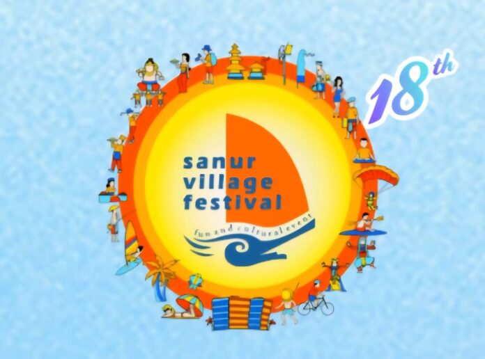

Kumpulan cerita budaya dari seluruh Nusantara

balibercerita.com – Sanur Village Festival (SVF) memiliki sejarah panjang dan pengaruh kuat dalam perkembangan pariwisata Bali. Festival yang lahir di masa sulit pasca-Bom Bali ini dirancang sebagai wahana promosi untuk membangkitkan kembali sektor pariwisata yang saat itu terdampak parah. Melalui ajang ini, Sanur ingin menyampaikan pesan kepada dunia bahwa kawasan tersebut aman dan siap dikunjungi wisatawan.
Ketua Yayasan Pembangunan Sanur (YPS) sekaligus Ketua Panitia SVF, Ida Bagus Gede Sidharta, menjelaskan bahwa Sanur Village Festival (SVF) yang telah berjalan selama 18 tahun kini menjadi ikon kawasan pesisir Kota Denpasar. SVF terus membawa dampak positif signifikan terhadap sektor pariwisata dan perekonomian lokal.
Tahun lalu, transaksi yang tercatat selama lima hari pelaksanaan festival mencapai hampir Rp 2,5 miliar. Angka ini melibatkan UMKM, seniman, dan pelaku seni lokal. Event ini juga mendorong peningkatan jumlah kunjungan wisatawan ke Sanur, dengan rata-rata lama tinggal mencapai 6–7 hari untuk wisatawan Australia dan 11–12 hari untuk wisatawan Eropa.
SVF lebih dari sekadar festival hiburan; ajang ini menjadi wadah kreatif yang mencerminkan nilai sosial, budaya, dan lingkungan. Festival ini menyatukan warga Sanur dan komunitas peduli keberlanjutan.
“Saya berharap penyelenggaraan tahun ini kembali menegaskan peran Sanur sebagai destinasi aman, kreatif, dan inspiratif. Sejak awal, Sanur Festival telah menjadi simbol bahwa Sanur tetap hidup, aman, dan terbuka bagi siapapun untuk berkarya,” ungkap Sidharta.
Kepala Bidang Pemasaran Dinas Pariwisata Kota Denpasar, Ni Ketut Trisna Aryani, mengatakan bahwa SVF adalah salah satu ajang terbesar di Bali dan memperkuat posisi Sanur sebagai destinasi unggulan di jantung Kota Denpasar.
Ia menambahkan bahwa event seperti SVF memberi dampak positif dalam meningkatkan kunjungan wisatawan dan menggairahkan perekonomian masyarakat.
SVF menjadi simbol bahwa Sanur tetap hidup, aman, dan terbuka bagi kreator lokal. Hal ini menunjukkan bahwa pariwisata Sanur bisa berkembang sambil mempertahankan identitas budaya.